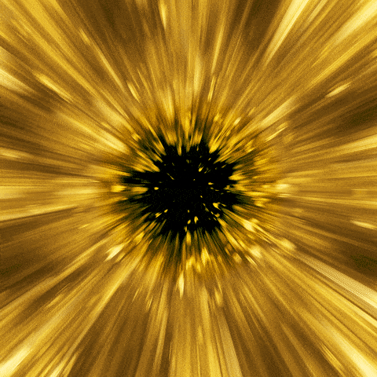

Turrell often cites the Parable of Plato’s Cave to introduce the notion that we are living in a reality of our own creation, subject to our human sensory limitations as well as contextual and cultural norms. This is evident in Turrell’s over eighty Skyspaces, chambers with an aperture in the ceiling open to the sky. The simple act of witnessing the sky from within a Turrell Skyspace, notably at dawn and dusk, reveals how we internally create the colors we see and thus, our perceived reality.
| Title | Place |
| JAMES TURRELL: PASSAGES OF LIGHT | Miguel de Cervantes Saavedra 303 Colonia Granada 11520 Mexico City |
| James Turrell: The Substance of Light | MUSEUM FRIEDER BURDA, BADEN-BADEN, GERMANY |
|  | Beam of light |